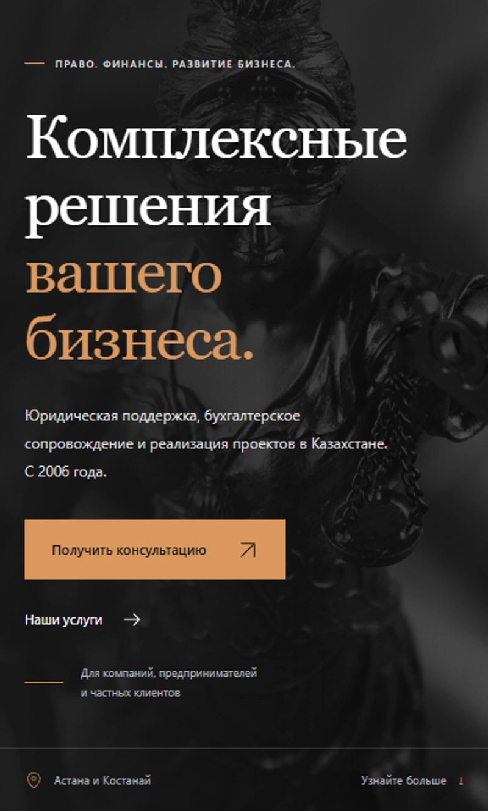
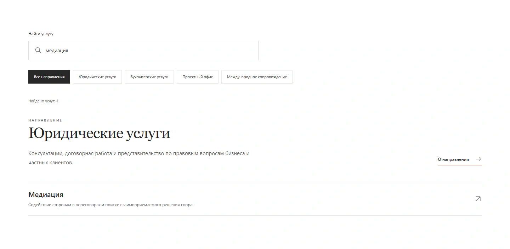

Клиентский проект · корпоративный сайт
Legal Technology
Двуязычный сайт компании, которая оказывает бизнесу юридические и бухгалтерские услуги.
Открыть публичную демоверсию
Задача
Помочь владельцу бизнеса найти подходящую юридическую или бухгалтерскую услугу и понять, как обратиться в компанию. Этот путь должен быть понятен на русском и английском.
Наш вклад
Спроектировали структуру сайта и каталога, собрали адаптивный интерфейс на базе фирменных материалов компании, связали соответствующие русские и английские страницы.
Мобильная версия
Услуги и консультация на первом экране
На узком экране заголовок и действия занимают одну колонку. Посетитель может сразу перейти к услугам или посмотреть, как устроено обращение за консультацией.

Функциональность
От задачи к конкретной услуге
Каталог можно просматривать по направлениям или искать нужную услугу по названию. У услуги есть своя страница. Переключатель языка открывает её соответствующую версию.

Результат
Публичная двуязычная демоверсия
В ней можно открыть описание услуги, сменить язык на той же странице и найти контакты компании.